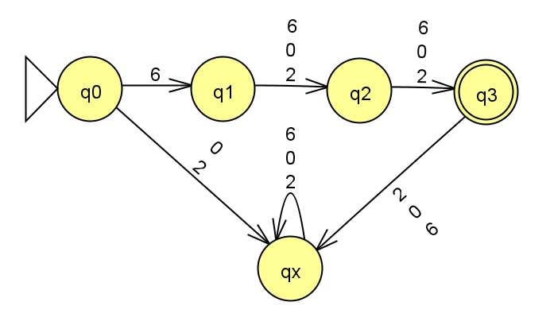
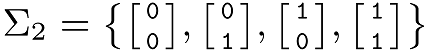

Homework 1
Last updated: Wed, 3 Apr 2024 11:09:55 -0400
Out: Mon Jan 29, 12:00pm EST (noon) Due: Mon Feb 05 Feb 12, 12:00pm EST (noon)
This assignment begins to explore deterministic finite automata (DFAs) and regular languages.
Homework Problems
HW 0 Second Chance! (up to 4 points extra)
DFA Formal Description (12 points)
Is It A Regular Language? (8 points)
DFAs Can Do "Real" Computation (5 points)
README (1 point)
Maximum: 30 (out of 26) points
Submitting
Submit your solution to this assignment in Gradescope hw1. Please assign each page to the correct problem and make sure your solutions are legible.
A submission must also include a README containing the required information.
HW 0 Second Chance!
what your misunderstanding was, and
what the right answer should be.
You will receive 1 bonus pt on this assignment for each HW 0 question where you provide the above information.
Alternatively, if you got less than four questions wrong, you may come up with a possible discrete math quiz question that you think would help future CS 622 students prepare for this course.
You will receive 1 bonus pt on this assignment for each quiz question you come up with.
The maximum bonus that may be earned on this assignment is 4 points.
1 DFA Formal Description
The first computational model we are studying is a class of machines called finite state automata (FSMs), or more specifically deterministic finite automata (DFAs). Intuitively, you can think of this as a "programming language" for expressing basic string matching computation.
Following this analogy, one DFA then would be a "program" that does a specific task of this kind. We learned in lecture that this "program" can have many representations, including a graphical one. In this problem, you will work with various representations, also also reason about how it "runs".
Concretely, imagine you have been given the task of implementing a computation that matches on numeric strings representing 600 level courses.
The following FSM (DFA) represents computation that could do this.
(In the state diagram, transitions with multiple character labels are a graphical abbreviation representing multiple transitions, one for each one of the characters.)

Come up with 2 strings that are accepted by the DFA. These strings are said to be in the language recognized by the DFA.
Come up with 2 strings that are not accepted (rejected) by the DFA. These strings are not in the language recognized by the DFA.
Come up with a formal description for this DFA.
Recall that a DFA’s formal description is a tuple of five components, e.g. M = (Q,\Sigma,\delta,q_{start},F).
You may assume that the alphabet contains only the symbols from the diagram.
Then for each of the following, say whether the computation represents an accepting computation or not (make sure to review the definition of an accepting computation). If the answer is no, explain why not:
\hat{\delta}(q0,\texttt{622})
\hat{\delta}(q0,\texttt{220})
\hat{\delta}(q1,\texttt{622})
\hat{\delta}(q1,\texttt{22})
2 Is It A Regular Language?
Here is a language definition:
L_{ugrad} = \{w\mid w\textrm{ is a three-digit string that represents a undergrad-level UMB course number}\}
You may assume that strings in the language are drawn from alphabet \{\texttt{0},\texttt{2},\texttt{4}, \texttt{6}\}.
Come up with 3 strings in the language.
Come up with 3 strings not in the language.
For this problem, for parts 1 and 2, you are allowed to post examples to Piazza for clarification if you are unsure.
Prove that the language is a regular language.
Important: Before attempting the proof, make sure to understand what this problem is asking. This means you must know the precise definitions of the terms used in this problem before you can begin solving this question, e.g., make sure you know the precise formal definition of: string, language, regular language, etc. Further, you need to know how to read the set (builder) notation above and what it means for something to be in and not in a set.
Your proof must be in the form of a Statements and Justifications table, as presented in class.
If your answer includes designing a DFA, you may submit a state diagram instead of a formal description of the machine.
To "prove" that a DFA recognizes a language, you may use as justification a table showing three strings that are both accepted by the DFA and in the language, and three strings that the DFA rejects and are also not in the language, as shown in lecture. The strings should ideally "test" as many different transition paths through the DFA as possible. (This should also tell you whether the strings you came up with in parts 1 and 2 are "good" examples or not.)
3 DFAs Can Do "Real" Computation
Here is an example showing that DFAs can perform "real" computation.
Assume that the following is an alphabet of "domino" symbols (one could easily use unicode characters to represent such an alphabet):

Now let L_{GTE} be a language consisting of sequences of these dominos where the top row and bottom rows of digits are each interpreted as a binary numbers (leftmost digit is most significant, i.e., "big-endian"). Specifically:
L_{GTE} = \{w\mid w \textrm{ is a sequence of dominoes where top row} \geq \textrm{bottom row}\}
Come up with 3 strings in the language.
Come up with 3 strings not in the language.
Prove that L_{GTE} is a regular language.
Your proof must be in the form of a Statements and Justifications table, as presented in class.
If your answer includes designing a DFA, you may submit a state diagram instead of a formal description of the machine.
To "prove" that a DFA recognizes a language, you may use as justification a table showing three strings that are both accepted by the DFA and in the language, and three strings that the DFA rejects and are also not in the language, as shown in lecture. The strings should ideally "test" as many different transition paths through the DFA as possible. (This should also tell you whether the strings you came up with in parts 1 and 2 are "good" examples or not.)